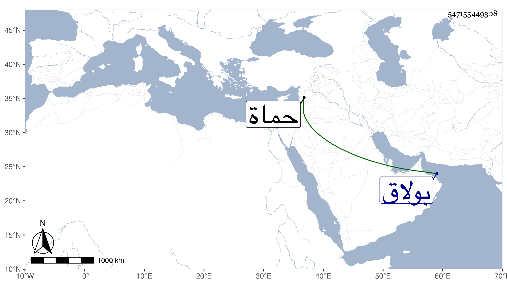

0902Sakhawi.DawLamic.ITO20230111-ara1.EIS1600.547155449308
Biography ID: 547155449308
59
بدرية ابنة الاشرف اينال سبطة ابن خاص بك وشقيقة المؤيد أحمد وفاطمة الآتية وصاحبة الترجمة هي الكبرى ، تزوجها مملوك أبيها قبل سلطنته وحجت معه غير مرة واستولدها محمدا وأحمد وابراهيم وابنتين إحداهما سعد الملوك تحت تنبك قرا والثانية تزوجها برسباي البجاسي ثم سودون المنصوري ثم اقبردي الاشرفي وتأيمت على ولدها منه واتصلت أمهم بعد أبيهم بقراجا الطويل نائب حماة ، وماتت في ليلة الاحد ثامن شعبان سنة تسع وسبعين بمنزلهم من بولاق فحملت بعد أن غسلت هناك إلى الجزيرة الوسطى ثم إلى سبيل المؤمني فصلى عليها بحضرة السلطان ثم دفنت بتربة أبيها ، وتذكر بكرم بالنسبة لابيها وإخوتها ويقال انها . كانت ساخطة على أكبر أولادها .
